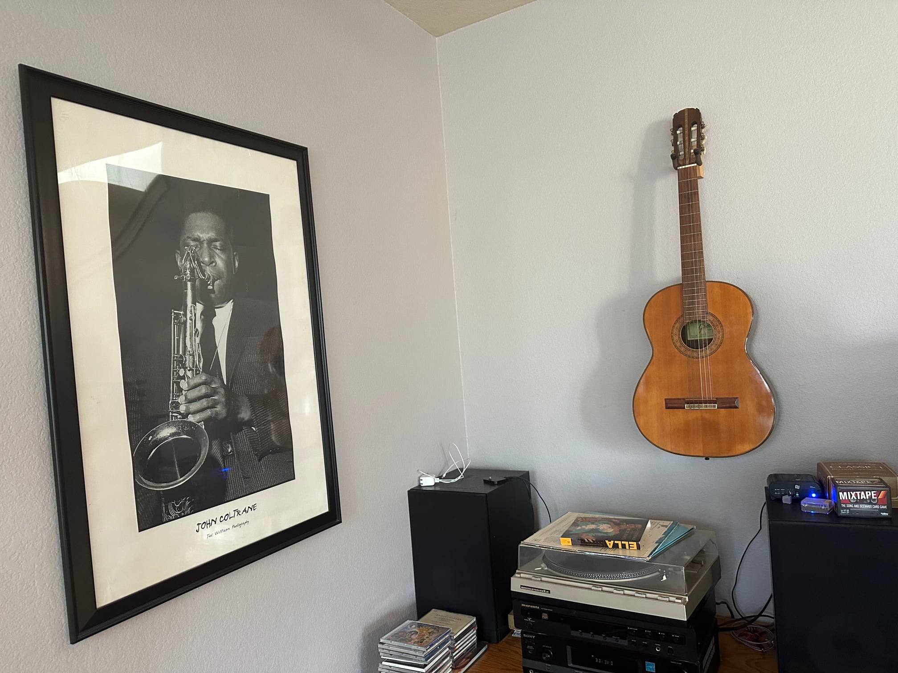

The outrage is warranted.
2024-05-10I am a musician. My instrument is Saxophone. My influences are many, but my sound is informed by a few of the greatest saxophonists who ever played. John Coltrane. Lee Konitz. His contemporary Paul Desmond whose sound was once compared to a dry martini to which he responded, Awww, I always thought it was two dry martinis
More specifically, I am a music technologist. Not only do I have the training and skills to write and perform music, but also the ear training, audio engineering knowledge, and digital technology knowledge to create beautiful recordings.
I'm also a wood worker. When I turn bowls and make bookshelves, I pour myself - my heart, my life force, into my projects.
The wood I use for the art of woodworking was, at one time, a living thing believe it or not. For me, I have found that a profound respect for the medium is required for success in the art form. Wood is a forgiving medium, but it also has a will of its own.
My aunt, who died of cancer when I was young, was the only musical talent in my family. Her name was Susan. When I was very little, she taught me how to spell by singing little songs to me like: "R - E - D spells red! Red as a tomato head!" while playing this guitar. Her guitar hangs in a place of honor in my living room.
I have some questions. Who made that guitar you destroyed? Who did they make it for? How long did it take to destroy something that took decades of practice for a luthier to learn to build, years to dry the wood, months to mill, assemble and finish the pieces, CENTURIES it took the TREE to grow into the beautiful wood we are graced with... a few seconds for a hydraulic press?
This video of a guitar being made is nearly 2 hours long. I dare you to watch it, and then try to describe the feelings that come up for you when you watch one being crushed. Watch a Master Luthier Build a Guitar (from scratch)
Check out this clip of Apple's #brilliant ad: Crush! | iPad Pro | Apple
The response is classic internet pitchfork rage. But it is also warranted. What were they thinking?